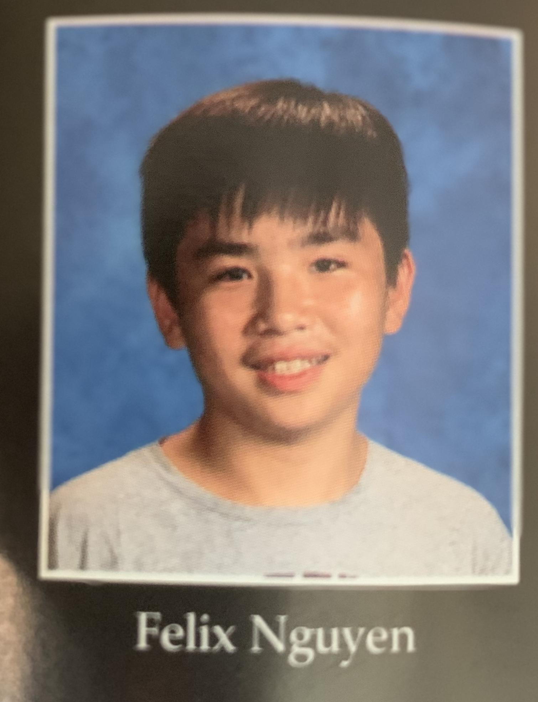

|  | One of my personal career goals of mine is majoring in computer science. We live in a world where technology is further growing and expanding to shape our future. I have always been curious to learn new things about technology, specifically software engineering or computer science engineering. I plan to finish my computer science classes in high school and then move on to further studies in college. This is my career choice because for one, I like using technology and learning about it, and two, it makes some serious cash, so it was an obvious choice. Some characteristics I would use to describe myself is being ambitious and doing some risk-taking. Games for example, you start out not knowing what to do. So, you learn the game and practice over and over until you get it. I am a natural leader. In the years that I was a game overview manager, I managed development and got things done through communication and proper time management. I am pretty friendly and reliable, so I make a good team member. A major achievement in high school so far is learning to be open-minded and accurate. From these experiences, I’ve learned to develop new skills for myself to be able to adapt to my surroundings and work. This helped me very much because I thought I could never learn new things without getting through the task at hand. Through my work experience, I’ve found out how to work efficiently and creatively. |
Thank you for learning more about me. Feel free to explore the rest of my site for more interesting things.